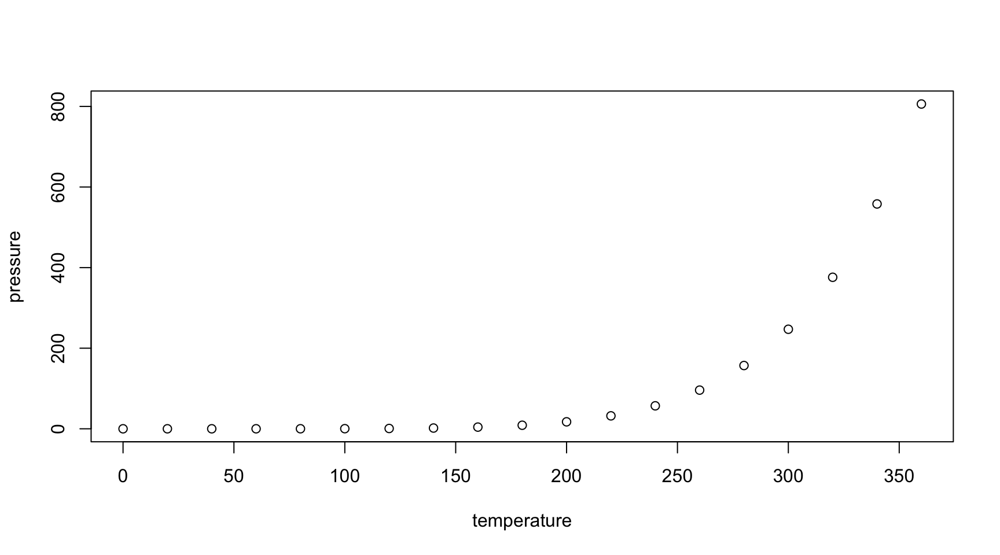

Alison Hill
hello revealjs!
Do emojis work now? 😄
Slide 2 has a special image for its background, even though the heading has no content.
help me
This is a colored slide with no title
contents…
Slide content
I’m a hidden slide
